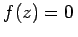
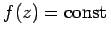

Nullstellen, Beschränktheit, Maximalwert
- 1. Nullstellen:
- Da der Absolutbetrag einer Funktion positiv ist, liegt das Relief stets oberhalb der z-Ebene, ausgenommen alle Punkte, in denen |f(z)| = 0 gilt, also . Man nennt z-Werte, für die f(z) = 0 ist, die Nullstellen der Funktion f(z).
- 2. Beschränktheit:
- Eine Funktion heißt in einem gegebenen Gebiet beschränkt, wenn die Bedingung |f(z)|<N erfüllt werden kann, wobei N eine konstante positive Zahl N ist. Im entgegengesetzten Falle, wenn es keine derartige Zahl N gibt, heißt die Funktion nicht beschränkt.
- 3. Satz über den Maximalwert:
- Wenn w = f(z) in einem abgeschlossenen Gebiet eine analytische Funktion ist, dann liegt das Maximum ihres Betrages auf dem Rande.
- 4. Satz über die Konstanz oder Satz von Liouville:
- Wenn w = f(z) in der gesamten Ebene analytisch und beschränkt ist, dann ist diese Funktion eine Konstante: .